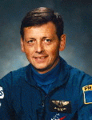

Lyndon B. Johnson Space Center
Houston, Texas 77058
|
National Aeronautics and Space Administration Lyndon B. Johnson Space Center Houston, Texas 77058 |
 |
Biographical Data |
||
Jean-Jacques Favier (Ph.D.)
Payload Specialist (France)
PERSONAL DATA: Born April 13, 1949, in Kehl, Germany. Married to the former Michele Jean. Four children. He enjoys downhill skiing, tennis, wind-surfing, and archeology.
EDUCATION: Attended primary and secondary schools in Strasbourg, France. Received an engineering degree from the National Polytechnical Institute of Grenoble in 1971 and earned a Ph.D. in engineering from the Mining School of Paris and a Ph.D. in metallurgy and physics from the University of Grenoble in 1977.
ORGANIZATIONS: Research Engineer, Commissaniat a l’Energie Atomique (CEA), 1976-1979. Head Solidification Group 1970-1986, Head of Laboratory 1986-1989, Head Solidification and Crystal Growth Service, 1989 to 1993, Cons. European Space Agency (ESA), Centre National D’Etudes Spatiales (CNES), Paris 1983 to present. Astronaut Candidate CNES, Paris 1985 to present. Member of Space Station User Panel of ESA.
SPECIAL HONORS: Recipient Zellidja Association 2nd prize, French Academy Literature 1970, E. Brun Price Award French Academy Sciences. Member of International Organization of Crystal Growth. Member of American Association of Crystal Growth, Societe Francaise de Metallurgie. Groupe Francais de Croissance Cristalline (Committee Chairman). Visiting Professor at University of Alabama in Huntsville (UAH) (1994-95). Member of the Space Science Committee of the European Science Foundation (ESF). Several patents on crystal growth processes, furnaces and insitu diagnosis. Published more than 80 research articles in refereed scientific journals and books.
EXPERIENCE: Dr. Favier is currently the Advisor of the Director of the Material Science Research Center (CEREM) at the French Atomic Energy Commission (CEA) and is presently detached to CNES. He proposed the MEPHISTO program, a collaborative project between the French Space Agency and NASA, and has developed many other scientific projects in collaboration with the United States since 1985. He is the principal investigator (P.I.) for a MEPHISTO materials processing experiment, which made its debut on the United States Microgravity Payload in 1992 and 1994 and is scheduled for subsequent Space Shuttle flights, the next being STS-75 in 1996. He has been a CNES payload specialist candidate since 1985. He has been P.I. of more than 10 space experiments in collaboration with ESA, NASA, and the Russians.
Dr. Favier was assigned as an alternate payload specialist on STS-65/IML-2, the second International Migrogravity Laboratory mission, and supported the mission as a Crew Interface Coordinator (CIC/APS) from the Payload Operations Control Center (POCC) at the Marshall Space Flight Center in Huntsville, Alabama.
Dr. Favier flew on STS-78 and has logged over 405 hours in space. STS-78 Columbia (June 20 to July 7, 1996) was a 16-day Life and Microgravity Spacelab mission. It included studies sponsored by ten nations and five space agencies, was the first mission to combine both a full microgravity studies agenda and a comprehensive life science investigation, and served as a model for future studies on board the International Space Station. STS-78 orbited the Earth 271 times, covering 7 million miles in 405 hours, 48 minutes.
AUGUST 1996
This is the only version available from NASA. Updates must be sought direct from the above named individual.
{kind=link}